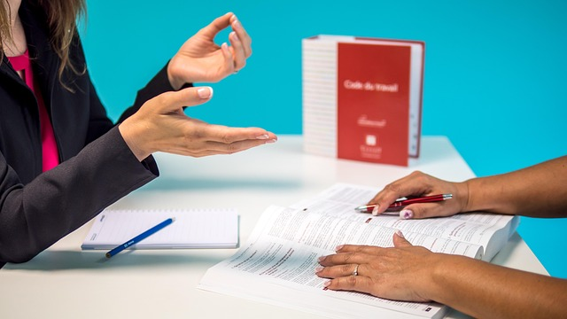
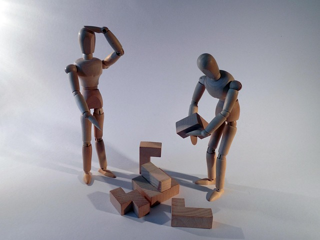
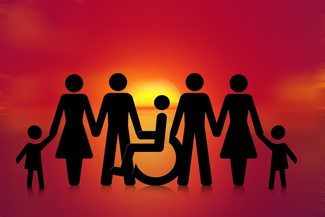
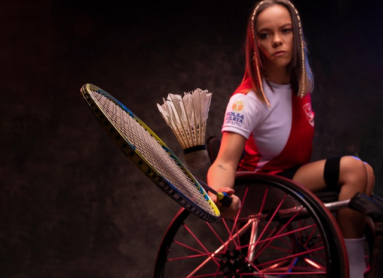

Pessoas em reunião de trabalho a conversarem em uma mesa branca.
Direitos
Como falar sobre deficiência
Segundo o site da Secretaria da Pessoa com Deficiência (SEPD) do Governo do Distrito
Federal, a publicação apresenta um guia para orientação e conscientização sobre o uso de
terminologias corretas e adequadas ao falar sobre pessoas com deficiência (PcD).
Ler reportagem →
Uma mulher sorridente em traje formal segura um documento.
Direitos
Direitos das pessoas com deficiência: tudo o que você precisa saber
Segundo o site do TST (Tribunal Superior do Trabalho), o artigo detalha os principais direitos das pessoas
com deficiência (PcD), abordando prioridade processual, cotas de emprego, reserva de vagas no setor público,
proibições contra discriminação e regras específicas para aposentadoria e previdência.
Ler reportagem →
Vários lápis de cor organizados em círculo num fundo branco.
Educação
Pessoas com deficiência e o acesso à educação
Segundo o site do Instituto Federal da Paraíba (IFPB), a publicação "Fique por Dentro" analisa a evolução
histórica das concepções sobre as pessoas com deficiência e discute a transição do modelo médico-patológico
para a perspectiva inclusiva, apontando os desafios atuais e a necessidade de combater o preconceito na educação.
Ler reportagem →
Uma jovem de perfil concentrada a ler um livro aberto ao ar livre.
Educação
Apenas uma em cada quatro pessoas com deficiência conclui ensino básico obrigatório no Brasil
Segundo o site da CNTE (Confederação Nacional dos Trabalhadores em Educação), dados da Pnad Contínua mostram que
apenas uma em cada quatro pessoas com deficiência conclui a educação básica no Brasil, apontando a falta de
acessibilidade estrutural e de formação docente como principais fatores de evasão escolar.
Ler reportagem →

Dois manequins articulados de madeira a tentar montar um quebra-cabeças em conjunto.
Dificuldades
As barreiras mais comuns no dia a dia da pessoa com deficiência
Segundo o site da APAE ES (Federação das Apaes do Estado do Espírito Santo), a matéria destaca as barreiras
cotidianas enfrentadas pelas pessoas com deficiência — como falhas de acessibilidade e preconceito — por ocasião
do Dia Nacional de Luta da Pessoa com Deficiência.
Ler reportagem →

Silhuetas de figuras humanas de dadas dadas, incluindo uma pessoa em cadeira de rodas, ao pôr do sol.
Dificuldades
Desafios enfrentados por pessoas com deficiência no mercado de trabalho
Segundo a Agência IBGE Notícias, os dados da Pnad Contínua mostram que pessoas com deficiência no Brasil enfrentam
significativos obstáculos de acesso à educação, menor taxa de participação no mercado de trabalho e rendimentos
médios inferiores às pessoas sem deficiência.
Ler reportagem →

Atleta paralímpica em cadeira de rodas a jogar parágminton com raquete e volante em estúdio.
Esporte
Quais são os esportes mais praticados por pessoas com deficiência intelectual?
Segundo o site do CPB (Comitê Paralímpico Brasileiro), a publicação aborda a presença da deficiência intelectual
nos Jogos Paralímpicos, detalhando as três modalidades elegíveis (atletismo, natação e tênis de mesa), o histórico
de participação e o desempenho dos atletas brasileiros na categoria.
Ler reportagem →
Estetoscópio e aparelho de medição da pressão arterial sobre um fundo branco.
Saúde
Política Nacional de Atenção Integral à Saúde da Pessoa com Deficiência – PNAISPD
Segundo o site EFS (Estudo em Foco Saúde), o texto resume a Portaria GM/MS nº 1.526/2023, que institui a
Política Nacional de Atenção Integral à Saúde da Pessoa com Deficiência (PNAISPD) no âmbito do SUS, e detalha seus
principais conceitos e diretrizes de acessibilidade e cuidado integral.
Ler reportagem →